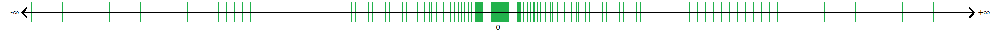

Kommazahlen in der Digitaltechnik
Da man für viele gängige Berechnungen Kommazahlen benötigt, ist es auch nötig diese in Computern darzustellen und mit ihnen zu rechnen.Hierfür werden Fließkommazahlen verwendet. Fließkomma heißen sie, da Teile der Darstellung dafür verantwortlich sind das Komma zu "verschieben".
Wissenschaftliche Schreibweise
Die Fließkommazahldarstellung ähnelt der wissenschaftlichen Schreibweise in ihrem Aufbau. Dabei werden sehr große oder sehr kleine Zahlen als Kombination einer Kommazahl (r; normalerweise zwischen 1 und 10) und einer 10er-Potenz (10n) repräsentiert.Beispiele:
1.5 * 108 = 150,000,000
2.735 * 10-5 = 0.00002735
4.35 * 1014 = 435,000,000,000,000
Darstellung
Analog zur wissenschaftlichen Schreifweise für Zahlen verwenden Fließkommazahlen eine Mantisse, das ist die Ziffernstelle, und einen Exponenten. Da jedoch im Binärsystem gearbeitet wird, ist die Basis nicht 10 sondern 2. Da man nicht selbständig Kommapunkte setzten kann, wird die Mantisse so interpretiert, als würde es sich nach der ersten Ziffer befinden.Die Darstellung im Speicher hängt nun vom verwendeten Standart ab. Eine beispielhafte Darstellung (orientiert an der Fließkommazahl halber Genauigkeit des IEEE 754), die 16-bit umfassen würde, könnte in etwa so aussehen:
1 Bit gibt das Vorzeichen (0: +; 1: -) an. Dann geben 5 Bits in 2er-Komplementdarstellung den Exponenten zwischen -16 und 15 an. Am Ende befindet sich die Mantisse, in der die verbleibende positive Binärzahl, als hätte sie einem Komma nach dem ersten Bit, gespeichert wird.
| Vorzeichen | -16 | 8 | 4 | 2 | 1 | 1 | 1/2 | 1/4 | 1/8 | 1/16 | 1/32 | 1/64 | 1/128 | 1/256 | 1/512 |
| 0 | 0 | 0 | 0 | 1 | 1 | 1 | 0 | 0 | 0 | 1 | 1 | 1 | 0 | 0 | 0 |
blau: Vorzeichen (1bit), rot: Exponent (5bit), grün: Mantisse (10bit)
Eingabe einer dezimalen Kommazahl (als Komma wird "." verwendet):1.109375 * 23 = 8.875
Da das erste Bit der Mantisse immer 1 ist, wird in vielen Standarts dieses Bit weggelassen, sodass die Mantisse mit dem 1/2 Bit beginnt.
Limitierung
Wenn man versucht große oder sehr genaue Zahlen, wie es im oberen Beispiel 30000 oder 0.0003, versucht zu speichern fällt auf, das die Wirklich gespeicherten Werte abweichen (29984; 0.0002999305725097656). Dies liegt daran, dass, durch das "verschieben" des Kommas, je nach Expont nur Werte mit einem bestimmten Abstand zu ihrem vorherigen bzw. nachfolgenden Wert haben.In Abhängigkeit vom Exponenten n und der Länge Mantisse m in Bitlässt sich der Abstand der Werte, die dargestellt werden können so ausdrücken:
log2(n - m)
Je näher die Werte also an Null sind, desto genauer können sie angegeben werden.
Visualisierung der Darstellbaren Werte als Fließkommazahl; By Joeleoj123 - Own work, CC BY-SA 4.0, https://commons.wikimedia.org/w/index.php?curid=95784506
Standarts
Die heutzutage Üblichen Fließkommazahldarstellungen sind in der IEEE 754 Norm definiert.| Name | Vorzeichenlänge in bit | Mantissenlänge in bit1 | Exponentenlänge in bit | Gesamtlänge in bit |
|---|---|---|---|---|
| Half | 1 | 11 | 5 | 16 |
| Single | 1 | 24 | 8 | 32 |
| Double | 1 | 53 | 11 | 64 |
| Quadruple | 1 | 113 | 15 | 128 |
| Octuple | 1 | 237 | 19 | 256 |
1Hier wird das erste Bit der Matisse in der Darstellung weggelassen, in der Länge jedoch mit angegeben Siehe
Von diesen Varianten werden Single und Double am häufigsten verwendet.
Besondere Werte
IEEE 754 definiert zudem besondere Werte, wenn der Exponent nur aus Einsen besteht:- Mantisse = 0: Unendlich, positiv oder negativ abhängig vom Vorzeichen
- Mantisse ≠ 0: NaN (Not a Number), häufig als Platzhalter verwendet, wenn Zahlen nicht korrekt gelesen werden konnten
~ Tobias